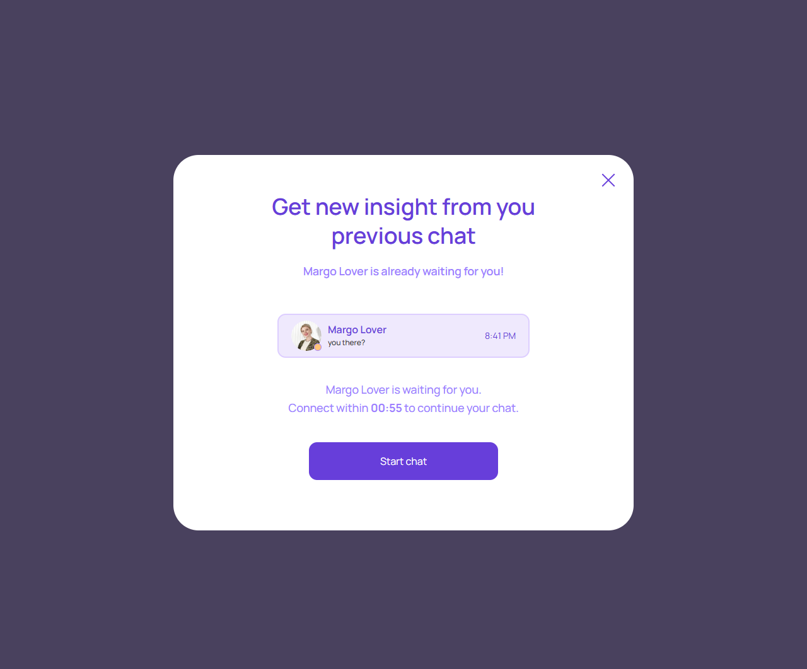

Повторное предложение
account/expert-wants-to-continue.html
Предложить продолжение без скрытого запуска.
| Когда открывается | Существующее новое предложение эксперта |
|---|---|
| Данные | offerId; expert; price; validity; прошлый dialogId. |
| Сценарий | Start chat принимает текущее предложение по явному согласию; далее funding/Start; Close не списывает деньги. |
| Переходы | Пополнение перед началом · Подключение |
Нельзя автоматически переоткрыть старую completed session.
Общая и предметная логика. Снимки и подписи элементов — исходная редакция макета; поздние уточнения ТЗ имеют приоритет в своей области. Это не проверка текущего сайта.
Сопоставление с AskNebula
Существующие наблюдения 07–09.10.2026, без повторной проверки в этой передаче.
Нужна отдельная сверка соответствующего экрана/состояния референса. Отсутствие аналога не установлено.
Состояние 1280 · 1280 × 1062


Элементы и ожидаемые действия
| Элемент | Название в макете | Действие | Ожидаемый результат |
|---|---|---|---|
| E001 Скрыт в этом состоянии | Follow-up offer status | Информационный блок/область фокуса, не самостоятельная команда. | Показывать актуальные данные соответствующего сценария; фокус или чтение не выполняют мутацию. |
| E002 Виден | Close follow-up offer | Закрыть локальное окно или вернуться к инициатору; Stay отменяет намерение завершить. | Вернуть фокус и исходный контекст. Не выполнять оплату, удаление или Complete. При неизвестном результате платежа сначала сверить заказ. |
| E003 Виден | Start chat | Продолжить сценарий «Повторное предложение»: Start chat принимает текущее предложение по явному согласию; далее funding/Start; Close не списывает деньги. | Сохраняются expertId/dialogId; вопрос, согласие, funding и operator Start не объединяются. Нажатие само не запускает платное время. |
Состояние 390 · 390 × 844

Элементы и ожидаемые действия
| Элемент | Название в макете | Действие | Ожидаемый результат |
|---|---|---|---|
| E001 Скрыт в этом состоянии | Follow-up offer status | Информационный блок/область фокуса, не самостоятельная команда. | Показывать актуальные данные соответствующего сценария; фокус или чтение не выполняют мутацию. |
| E002 Виден | Close follow-up offer | Закрыть локальное окно или вернуться к инициатору; Stay отменяет намерение завершить. | Вернуть фокус и исходный контекст. Не выполнять оплату, удаление или Complete. При неизвестном результате платежа сначала сверить заказ. |
| E003 Виден | Start chat | Продолжить сценарий «Повторное предложение»: Start chat принимает текущее предложение по явному согласию; далее funding/Start; Close не списывает деньги. | Сохраняются expertId/dialogId; вопрос, согласие, funding и operator Start не объединяются. Нажатие само не запускает платное время. |